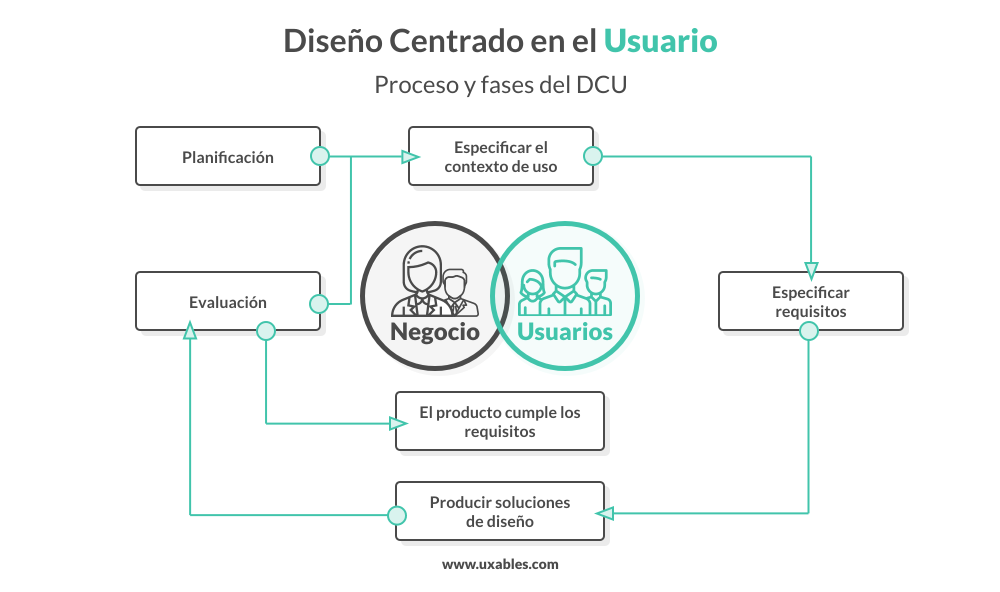
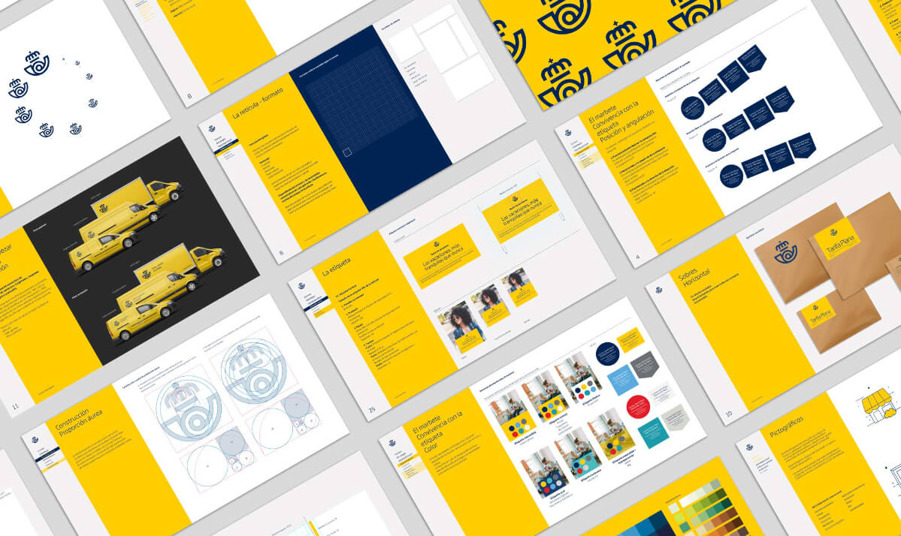
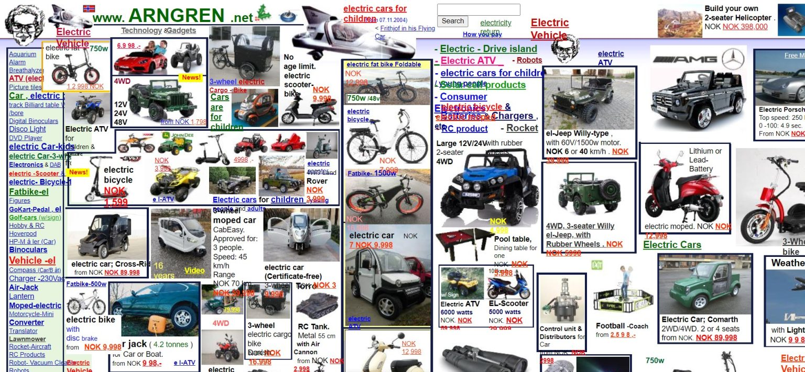
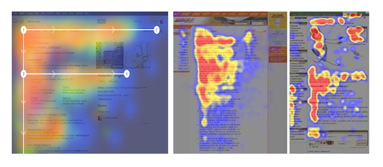
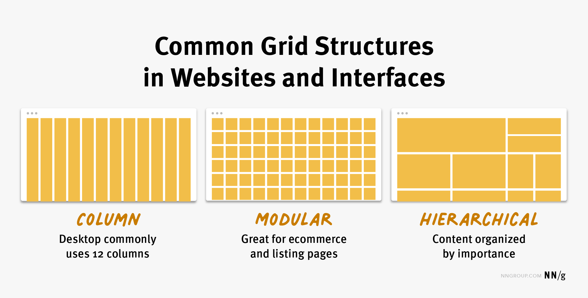
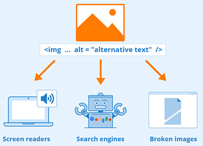
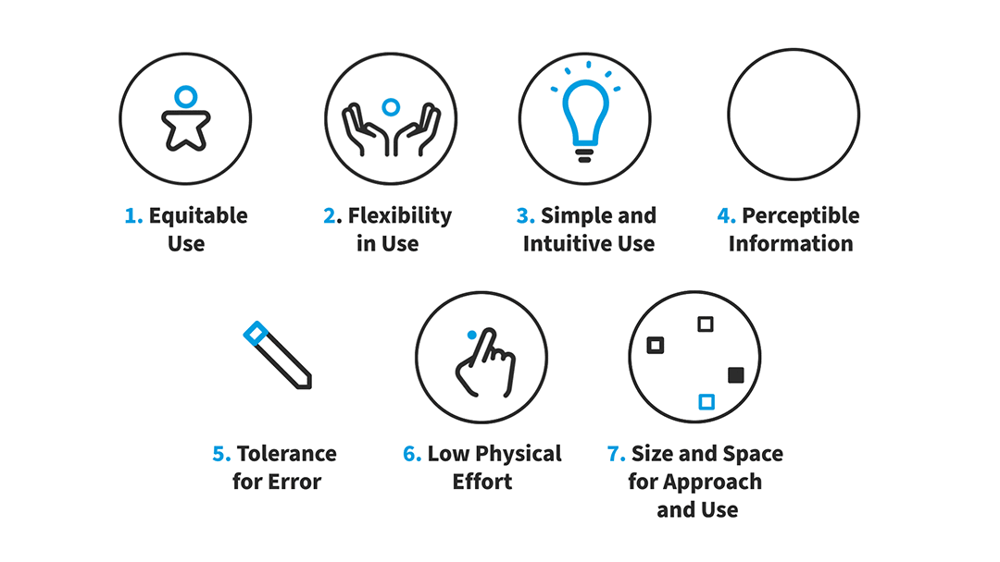
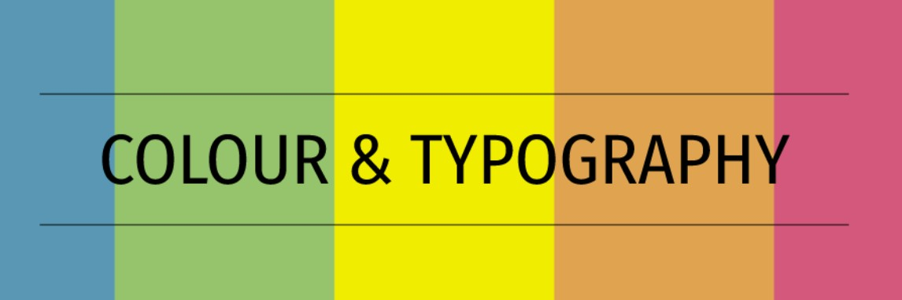
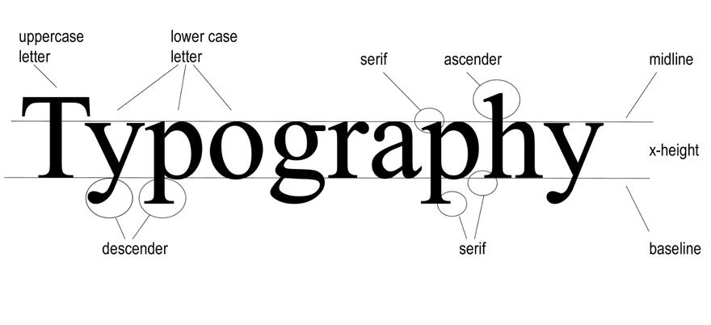
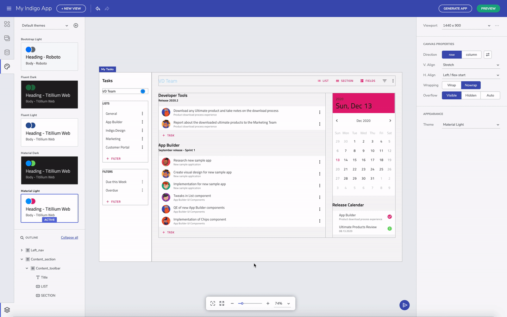

El diseño de interfaces de usuario (UI) busca crear sistemas que sean eficaces, intuitivos y
agradables para los usuarios. Aplicar principios de diseño facilita la interacción, reduce
errores y mejora la experiencia general.
1.1 Diseño centrado en el usuario (DCU)
El DCU es un enfoque de diseño que pone a las personas en el centro del proceso. Sus decisiones se basan en
necesidades, objetivos y contexto de uso de los usuarios finales.
1.1.1 Características del DCU
Enfoque en el usuario: La interfaz se adapta a la forma en que los usuarios piensan y
trabajan.
Iterativo: Se desarrollan prototipos, se prueban y se ajustan continuamente.
Accesible: Todos los usuarios, independientemente de sus capacidades, deben poder
utilizar la interfaz.
Basado en evidencia: Se recopilan datos mediante entrevistas, encuestas y pruebas de
usabilidad.
1.1.2 Etapas principales del DCU
Análisis del usuario: Identificar perfiles, necesidades y contexto de uso.
Requisitos de la interfaz: Definir funcionalidades, restricciones y objetivos de la UI.
Prototipado: Crear representaciones visuales iniciales para probar ideas.
Evaluación: Recoger retroalimentación mediante pruebas de usabilidad y ajustar la
interfaz.
Revisión: Adaptar el diseño según los resultados y volver a evaluar los cambios.

1.2 Coherencia visual y experiencia de uso
La coherencia visual significa que los elementos de la interfaz siguen patrones consistentes. Esto permite al
usuario aprender la aplicación más rápido y reduce errores.
1.2.1 ¿Qué implica un diseño coherente?
Colores y tipografía uniformes en toda la interfaz.
Estilos de botones y controles consistentes.
Patrones de navegación claros y predecibles.

1.2.2 Consecuencias de una interfaz incoherente
Usuarios confundidos y frustrados.
Mayor probabilidad de cometer errores.
Tiempo de aprendizaje más largo para usar la aplicación.

Principios de usabilidad de Jakob Nielsen
Estas heurísticas ayudan a detectar problemas de uso durante la evaluación de una interfaz:
Visibilidad del estado del sistema: informar de lo que está ocurriendo.
Correspondencia entre el sistema y el mundo real: usar términos familiares.
Control y libertad: facilitar deshacer o salir de una acción.
Consistencia y estándares: mantener patrones reconocibles.
Prevención de errores: evitar problemas antes de que sucedan.
Reconocimiento antes que recuerdo: mostrar opciones y ayudas cuando se necesitan.
Flexibilidad y eficiencia: ofrecer atajos a usuarios con experiencia.
Diseño estético y minimalista: mostrar solo información relevante.
Ayudar a reconocer, diagnosticar y recuperarse de errores.
Ofrecer ayuda y documentación cuando sea necesaria.
Ejemplo: después de enviar un formulario, mostrar “Guardando…” y luego “Cambios
guardados” permite conocer el estado del sistema; incluir “Deshacer” aporta control al usuario.
Ayudas sensibles al contexto
Una ayuda contextual ofrece información relacionada con la tarea, el campo o la pantalla que el usuario está
utilizando. Debe aparecer cuando es útil y explicar cómo continuar sin interrumpir el trabajo.
Texto de ayuda junto a un campo: aclara el formato esperado, por ejemplo, “Introduce
una fecha en formato día/mes/año”.
Mensaje de validación: explica qué dato falta o cómo corregirlo.
Ayuda breve o tooltip: define una opción sin reemplazar su etiqueta visible.
Guía paso a paso o documentación: acompaña tareas con varios pasos.
Cómo diseñarla
Identifica la tarea y la dificultad probable del usuario.
Presenta la ayuda cerca del elemento al que se refiere y en el momento adecuado.
Escribe instrucciones concretas, claras y fáciles de cerrar o volver a consultar.
Comprueba que se pueda percibir y utilizar con teclado y tecnologías de asistencia.
No uses el color como única forma de comunicar un error ni ocultes información esencial en un tooltip
que solo aparece al pasar el ratón. La ayuda debe seguir disponible en pantallas táctiles y teclado.
2. Organización de elementos en pantalla
Una interfaz eficaz no depende únicamente del diseño visual o del tipo de controles utilizados. La
organización espacial y jerárquica de los elementos en pantalla es clave para facilitar la
comprensión, reducir la carga cognitiva y guiar al usuario hacia las acciones más importantes.
Organizar bien una pantalla significa distribuir la información y los controles de forma lógica, predecible y
visualmente atractiva. Un mal diseño puede hacer que incluso una funcionalidad bien implementada resulte
difícil de usar.
2.1 Distribución y jerarquía visual
La jerarquía visual es el orden de importancia que asignamos a los elementos de una interfaz a través de
técnicas gráficas como tamaño, color, posición y agrupación. Permite al usuario saber de un
vistazo qué mirar primero, qué ignorar y cómo proceder.
Principios básicos de jerarquía visual
Proximidad: los elementos cercanos se perciben como relacionados.
Repetición: usar patrones visuales repetidos facilita el reconocimiento.
Contraste: colores, tamaños o estilos distintos indican niveles de importancia.
Alineación: una disposición alineada transmite orden y estructura.
Espaciado adecuado: evita saturación visual y mejora legibilidad.
Zonas de atención
Estudios de seguimiento ocular muestran que los usuarios tienden a mirar primero la parte superior izquierda
y seguir un patrón en “F”. Esto condiciona el posicionamiento estratégico de elementos clave:
Logotipo, menú o navegación principal en la parte superior.
Contenido importante al inicio de las secciones.
Botones de acción destacados cerca de los elementos relacionados.

Organización en cuadrícula
El uso de sistemas de grid permite distribuir elementos respetando márgenes, alineaciones y
zonas funcionales. Existen frameworks que aplican estos principios (por ejemplo, Bootstrap en web), pero
también se aplican en diseño de escritorio y móvil.

2.2 Selección de controles apropiados
Una interfaz debe usar controles que se adapten a la información y al tipo de interacción esperada. No todos
los controles son adecuados para cualquier situación; una mala elección puede causar errores, frustración o
pérdida de eficiencia.
2.2.1 Tipos de controles comunes y uso recomendado
Tipo de control
Uso recomendado
Botón (Button)
Iniciar acciones, confirmar opciones, aceptar o cancelar.
Etiqueta (Label)
Mostrar texto estático o nombres asociados a otros controles.
Caja de texto (TextBox)
Ingresar datos libres: nombres, direcciones, comentarios.
Área de texto (TextArea)
Ingresar textos largos o multilínea.
Casillas (CheckBox)
Marcar múltiples opciones independientes.
Botones de opción (RadioButton)
Elegir una opción entre varias mutuamente excluyentes.
Listas desplegables (ComboBox)
Ofrecer muchas opciones en poco espacio.
Cuadro de lista (ListBox)
Mostrar múltiples ítems, con selección simple o múltiple.
Calendario (DatePicker)
Selección de fechas de forma visual y precisa.
Slider / SpinBox
Modificar valores numéricos de forma rápida o precisa.
Criterios para elección de controles
Número de opciones: muchas → lista desplegable; pocas → botones de opción.
Espacio disponible: si es reducido, se priorizan controles compactos.
Contexto de uso: en móviles, usar controles táctiles y grandes.
Frecuencia de uso: lo más usado debe estar más accesible.
Buenas prácticas en el uso de controles
Etiquetar claramente cada control con descripciones comprensibles.
Usar controles nativos del sistema operativo siempre que sea posible.
Evitar controles personalizados innecesarios que rompan la coherencia.
Validar la entrada del usuario antes de enviarla o procesarla.
3. Criterios de accesibilidad
La accesibilidad garantiza que todas las personas puedan usar una interfaz, independientemente de sus
capacidades, condiciones físicas, cognitivas o del entorno. Cumplir normativas y aplicar principios de
diseño inclusivo mejora la experiencia de todos los usuarios.
3.1 Normativas y estándares de accesibilidad
Entre los estándares y normativas más importantes se incluyen:
3.1.1 Normas internacionales (WCAG)
Las versiones más utilizadas son WCAG 2.0 y 2.1. Sus principios (POUR) son:
Perceptible: El contenido debe poder percibirse mediante los sentidos, no solo visual.
Operable: Debe poder utilizarse con teclado u otros dispositivos.
Comprensible: La interfaz debe ser entendible y predecible.
Robusto: Compatible con tecnologías de asistencia.
3.1.2 Buenas prácticas y normativas locales
EN 301 549 (UE): Estándar europeo que establece requisitos de accesibilidad para
productos y servicios TIC, incluyendo software y aplicaciones móviles.
Ley 34/2002 (LSSI, España): Exige accesibilidad de sitios web y aplicaciones públicas,
y en ciertos casos privadas.
Ejemplos de requisitos comunes
Contraste mínimo de 4.5:1 entre texto y fondo.
Navegación completa mediante teclado.
Incluir texto alternativo en imágenes.
Titulación y etiquetas claras para formularios.
Evitar contenido que parpadee o se mueva sin control.
Este bloque muestra cómo aplicar algunos de los criterios más importantes de accesibilidad:
Contraste mínimo 4.5:1:
Texto negro sobre fondo blanco → alto contraste ✅
Texto gris claro sobre fondo blanco → bajo contraste ❌
Navegación con teclado:
Prueba moverte entre los campos usando la tecla Tab:
Texto alternativo en imágenes:

La etiqueta alt permite que usuarios con lectores de pantalla comprendan la imagen.
Etiquetas claras en formularios:
Evitar contenido que parpadee:
Este texto no parpadea, para cumplir con accesibilidad ✅
No se deben usar elementos que parpadeen o se muevan de forma automática.
3.2 Diseño inclusivo
El diseño inclusivo va más allá de cumplir normativas: incorpora la diversidad de los usuarios desde el
inicio del proyecto, evitando correcciones posteriores.
Características del diseño inclusivo
Flexibilidad: Se adapta a distintas necesidades, dispositivos y entornos.
Prevención de exclusión: Detecta y evita barreras antes de que aparezcan.
Participación activa: Usuarios diversos participan en pruebas de usabilidad.
Buenas prácticas de diseño inclusivo
No usar el color como único indicador; acompañar con texto o icono.
Permitir ajustes de tamaño de texto sin pérdida de funcionalidad.
Evitar interacciones temporizadas que impidan completar tareas.
Diseñar formularios con etiquetas externas legibles por lectores de pantalla.
Ofrecer subtítulos, transcripciones o descripciones de audio en contenidos multimedia.

Ejemplos de colectivos beneficiados
Personas con discapacidad visual: baja visión, daltonismo, ceguera.
Personas con discapacidad auditiva: sordera, pérdida auditiva parcial.
Personas con dificultades cognitivas: TDAH, dislexia, TEA.
Personas mayores: deterioro sensorial, motricidad reducida.
Usuarios con limitaciones temporales: brazos lesionados, fatiga visual, entornos ruidosos.
Tecnologías de asistencia
Lectores de pantalla (JAWS, NVDA, VoiceOver).
Magnificadores de pantalla.
Software de navegación por voz.
Teclados alternativos o adaptados.
Líneas braille electrónicas.
4. Estética y legibilidad
Una interfaz funcional no tiene por qué ser estéticamente pobre. Diseñar una interfaz visualmente cuidada y
legible favorece tanto la comprensión como la aceptación del sistema por parte del usuario.
La estética debe estar al servicio de la función: un diseño atractivo capta la atención, transmite
profesionalidad y mejora la experiencia de uso sin distraer del objetivo principal. Además, una buena
legibilidad garantiza accesibilidad para personas con baja visión o dificultades cognitivas.
4.1 Colores, tipografía y contraste

Estos elementos son fundamentales para garantizar claridad informativa y equilibrio visual en la
interfaz.
Colores
Los colores cumplen una función decorativa, simbólica y funcional. El uso correcto ayuda a:
Reservar colores llamativos para acciones importantes.
Probar visibilidad con filtros de daltonismo (Coblis, simuladores de accesibilidad).
Evitar combinaciones que generen fatiga visual (por ejemplo, rojo sobre verde).
Tipografía
La elección de fuentes influye directamente en la facilidad de lectura. Una fuente inadecuada provoca fatiga
ocular y confusión.
Usar fuentes sans-serif (Arial, Verdana, Roboto) para interfaces digitales.
Evitar fuentes decorativas o manuscritas salvo casos puntuales.
Tamaño mínimo de 11 pt para texto base (preferible 12-13 pt en pantallas grandes).
Aplicar jerarquía tipográfica mediante tamaño, grosor y color (títulos, subtítulos, cuerpo).
Limitar a dos familias tipográficas en toda la interfaz.
Asegurar interlineado suficiente (1.3 a 1.6 veces el tamaño de fuente).

Contraste
El contraste entre texto y fondo es esencial para la legibilidad. Según WCAG:
Contraste y legibilidad según WCAG
El contraste entre texto y fondo es esencial para la legibilidad. Según WCAG:
Relación mínima 4.5:1 para texto normal.
Relación mínima 3:1 para texto grande (≥18 pt o ≥14 pt en negrita).
Ejemplos de contraste
✅ Contraste correcto: Texto negro sobre fondo blanco, legible y seguro.
❌ Contraste insuficiente: Texto gris claro sobre fondo blanco, difícil de leer.
4.2 Personalización de estilos
Permitir que el usuario adapte la interfaz a sus preferencias mejora accesibilidad, usabilidad y experiencia
general. Los usuarios trabajan en condiciones diversas: luz solar directa, problemas de visión o
preferencias personales.
Ejemplos de estilos personalizables
Modo oscuro / claro: visibilidad en distintas condiciones de luz.
Tamaños de fuente ajustables: ayuda a personas con baja visión o dislexia.
Esquemas de color alternativos: pensados para daltonismo u otras alteraciones perceptivas.
Interfaz adaptable al dispositivo: diseño responsive para reorganizar elementos según tamaño de
pantalla.

Técnicas para permitir personalización
Usar variables de estilo (CSS variables, temas en WPF).
Incluir preferencias de usuario almacenadas localmente o en la nube.
Aplicar hojas de estilo separadas por modo (por ejemplo, modo accesible).
Ejemplo práctico de personalización
Un ejemplo simple de modo oscuro y cambio de tamaño de fuente:
<!-- Botón de ejemplo para alternar el modo oscuro -->
<button onclick="document.body.classList.toggle('dark-mode')">Modo oscuro</button>
<!-- Botón de ejemplo para aumentar el tamaño del texto -->
<button onclick="document.body.style.fontSize='18px'">Fuente grande</button>
<!-- Inicia los estilos del modo oscuro -->
<style>
/* Aplica los colores del tema oscuro */
.dark-mode {
background-color: #121212; /* Usa un fondo oscuro */
color: #f0f0f0; /* Mantiene el texto legible */
} /* Finaliza las reglas del modo oscuro */
</style> <!-- Finaliza los estilos del ejemplo -->
¿Qué has aprendido?
El diseño centrado en el usuario tiene en cuenta sus necesidades y el contexto de uso.
La coherencia visual y una buena jerarquía facilitan el aprendizaje y la realización de tareas.
Los controles deben elegirse según los datos, las opciones y el dispositivo.
Las WCAG organizan la accesibilidad en cuatro principios: perceptible, operable, comprensible y robusto.
El diseño inclusivo incorpora la diversidad desde el inicio.
Contraste, tipografía y personalización influyen en la legibilidad y la experiencia.
Las ayudas contextuales deben aparecer donde y cuando el usuario las necesita.
Una interfaz de calidad no solo resulta atractiva: también es clara, coherente, accesible y útil para
personas con diferentes necesidades y contextos.
Glosario de la UT5
Accesibilidad: capacidad de una interfaz para ser utilizada por el mayor número
posible de personas.
Contraste: diferencia visual entre elementos, especialmente entre texto y fondo.
Coherencia visual: uso uniforme de colores, tipografías, iconos y estructuras.
Control: elemento interactivo que permite realizar acciones.
DCU: metodología que coloca al usuario en el centro del diseño.
Diseño inclusivo: creación de productos útiles para personas diversas desde el inicio.
Experiencia de usuario (UX): percepciones y resultados que una persona experimenta
al utilizar una aplicación.
Interfaz de usuario (UI): parte visual e interactiva que comunica al usuario con
el sistema.
Jerarquía visual: organización gráfica que guía la atención según la importancia.
Legibilidad: facilidad para leer y comprender el texto en pantalla.
WCAG: pautas internacionales para la accesibilidad de contenidos digitales.
Personalización de estilos: ajustes que adaptan la apariencia a preferencias y
necesidades.
Prototipo: versión preliminar para probar ideas antes del desarrollo final.
Tipografía: estilo, forma y disposición de las letras.
Ayuda contextual: información de apoyo relacionada con la tarea o elemento actual.
Fuentes de información
Apple, Human Interface Guidelines.
ISO 9241-210, diseño centrado en el ser humano para sistemas interactivos.
Microsoft, Fluent Design System.
Nielsen, Usabilidad: diseño de sitios web efectivos.
W3C, Web Content Accessibility Guidelines (WCAG) 2.1.
Unión Europea, norma EN 301 549 sobre accesibilidad de productos y servicios TIC.
Fundación ONCE, guías prácticas de accesibilidad digital.
Consulta la versión vigente de cada norma y guía cuando debas comprobar requisitos de accesibilidad.
Actividad 1: relaciona conceptos de diseño centrado en el usuario
Enunciado: relaciona cada concepto con su definición.
Conceptos: 1. Diseño centrado en el usuario; 2. Coherencia visual;
3. Ayuda sensible al contexto; 4. Accesibilidad.
Definiciones: A. Ayuda que adapta la información a la necesidad del usuario en ese
momento; B. Diseño que prioriza la experiencia del usuario; C. Uso de elementos visuales consistentes;
D. Inclusión de personas con distintas capacidades.
Cómo resolverla
Explica con tus palabras cada concepto antes de elegir una definición.
Busca las palabras clave: necesidades, consistencia, momento de uso y distintas capacidades.
Anota las parejas en el formato 1-?, 2-?, 3-?, 4-? y revisa que no repitas definiciones.
La rúbrica valora todas las relaciones correctas y una comprensión clara de las ayudas contextuales;
no basta con asociar palabras sin explicar el concepto.
Actividad 2: clasifica elementos visuales
Enunciado: clasifica cada elemento como jerarquía visual,
estilo gráfico o control de interacción.
Elementos: tamaño de fuente, contraste de colores, botón de envío, encabezado principal,
tipografía y casilla de verificación.
Plantilla de respuesta
Elemento
Categoría
¿Por qué?
Tamaño de fuente
Contraste de colores
Botón de envío
Encabezado principal
Tipografía
Casilla de verificación
Primero distingue los elementos que organizan la atención, los que definen la apariencia y los que
permiten realizar una acción. Justifica brevemente las decisiones.
Actividad 3: completa la tabla sobre accesibilidad
Enunciado: indica qué aspecto de accesibilidad mejora cada acción:
usar alto contraste; incluir texto alternativo en imágenes; permitir navegación con teclado;
mostrar ayudas contextuales.
Opciones: acceso para personas con baja visión; acceso para lectores de pantalla;
acceso sin necesidad de ratón; apoyo en tareas específicas.
Acción
Mejora en accesibilidad
Usar alto contraste
Incluir texto alternativo en imágenes
Permitir navegación con teclado
Mostrar ayudas contextuales
Cómo resolverla
Piensa qué barrera reduce cada acción.
Usa cada opción una sola vez y verifica que la relación sea concreta.
Relaciona las ayudas contextuales con la tarea que la persona intenta completar.
Actividad 4: ordena el proceso de diseño inclusivo
Enunciado: ordena estos pasos para diseñar una interfaz inclusiva:
A. Identificar necesidades de accesibilidad.
B. Aplicar normativas y estándares.
C. Diseñar ayudas sensibles al contexto.
D. Personalizar estilos para distintos perfiles.
E. Verificar la experiencia de uso.
Cómo resolverla
Empieza por conocer a las personas y las barreras que pueden encontrar.
Después decide qué requisitos y soluciones de diseño aplicar.
Termina comprobando la experiencia con pruebas y revisa el resultado.
La rúbrica valora el orden y la explicación de cómo las ayudas contextuales contribuyen al diseño
inclusivo. Justifica el proceso con una frase por paso.